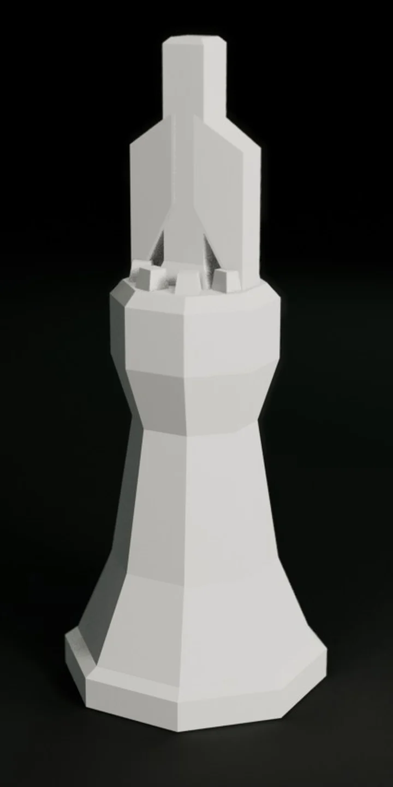
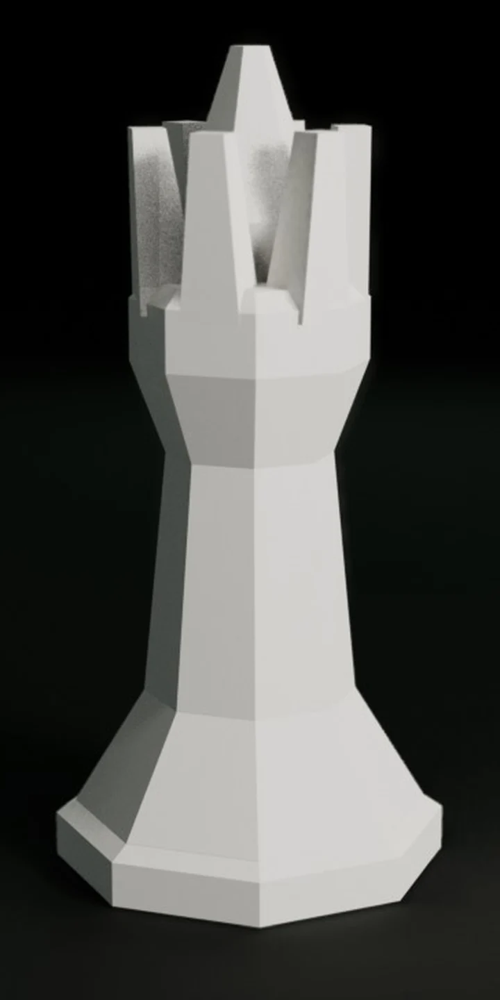
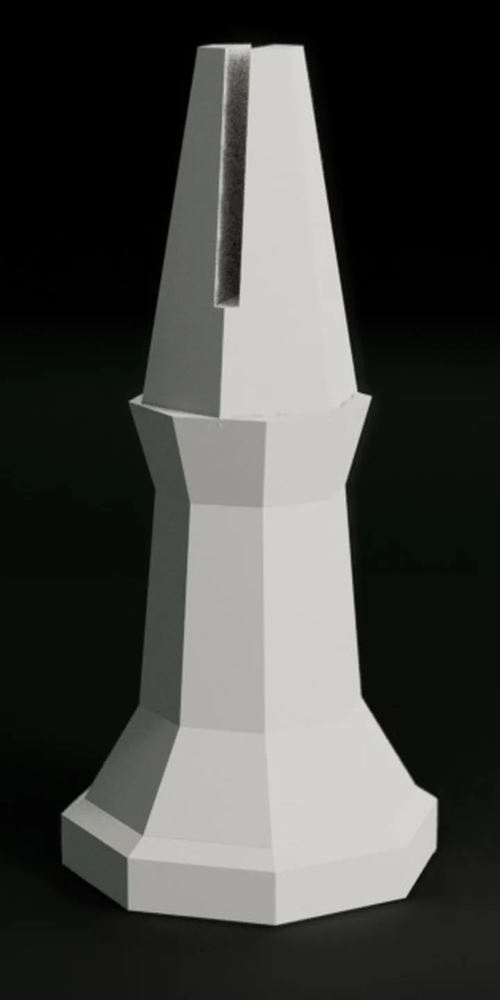
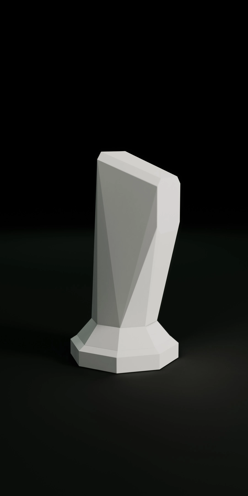
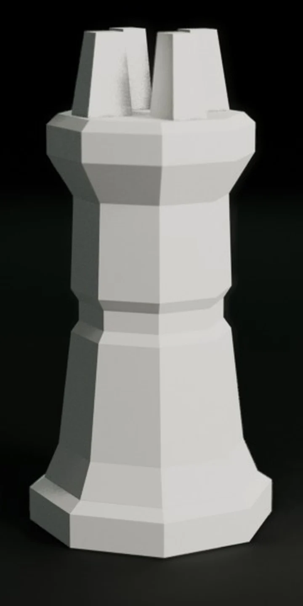
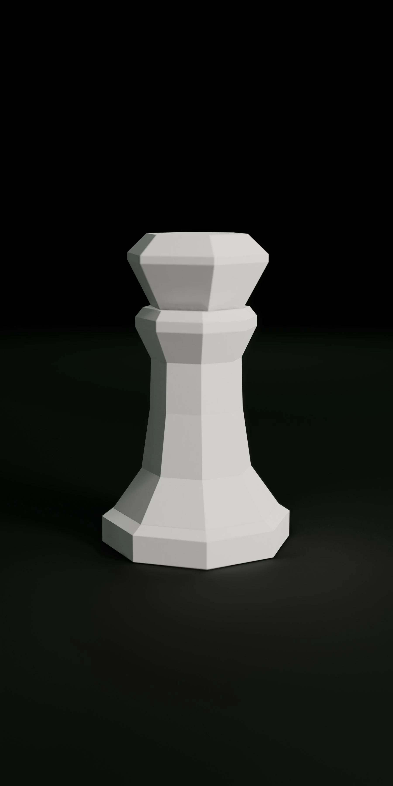

01
Every age group
Kids find their bearings with colors on the board; adults get depth of analysis and a calm game pace. Parents, after-school clubs, cafés, and home clubs — one board, many ways to learn.
CzechMate
Real pieces the board can identify, lights on the squares, and an app that teaches — from the first game to Stockfish and an AI coach.
Education
Chess clicks best when the pieces are under your hands and you can see right away whether a move makes sense. CzechMate brings together real pieces, lights on the squares, and an app with rules, position, and analysis. Set your opponent from calm lessons up to a top engine; when you need an explanation, bring in the AI coach.
Kids find their bearings with colors on the board; adults get depth of analysis and a calm game pace. Parents, after-school clubs, cafés, and home clubs — one board, many ways to learn.
Beginners see where they may move and what check or mate means. Advanced players work on tactics, plans, and evaluations — including a top chess engine and coach conversations.
You touch a piece, see a lit square, and optionally hear a human explanation or read an AI reply. The more senses you use, the better rules and patterns stick.
The set
The set is faceted PLA: wide feet, thick tips, and no overhang that needs support. Magnets in each foot are arranged so Hall sensors under the square do not only see “something is here” — they resolve which piece type it is (pawn through king), so the position on the board matches the game.

King
Queen
Bishop
Knight
Rook
PawnThe board as tutor
Under every square are Hall sensors. The board knows a piece is there, and the magnet pattern in the foot tells it what type it is — not a guess from the app, a reading from the hardware. Hints land on a real chessboard, not “some picture.” The board runs the game in real time and the LEDs match the pieces. You can refresh firmware without cables to the chip from the app, the board’s web UI, or Wi‑Fi.
Physical pieces and lights on the squares stay in sync: on every move you know whether the system sees what you see. Less guessing, more confidence. Connect a phone or computer and you get a game overview, move history, and hints from the board web UI and the CzechMate app on the same position.
An opponent from another league
CzechMate runs Stockfish: an engine that, in raw strength, beats any living player. For learning, pick a weaker engine level and a calmer game with a readable pace. Start a game from the app or the board’s web UI over Wi‑Fi. On every move you get engine suggestions, position analysis, and a comparison with your choice.
Train against an opponent at top-engine level — above the human ceiling. Dial strength down for a slower pace or a gentle mode for beginners.
An estimate of advantage in approximate pawns from an engine that can beat grandmasters helps you read the position — especially in the middlegame and endgames.
The same game logic on the board and in the app means lessons on the lights and on the screen speak the same language.
AI coach in the app
In the app you get a conversation on the current position: a multi-move plan, typical mistakes, and deeper strategy. Set the explanation level so the text fits a beginner or a club player.
In settings you choose an assistant: cloud based on your account, or a local mode that fits school, club, or home rules. Offline or without a sign-in you still get basic offline hints from built-in chess tips.
CzechMate app
One app for Android and macOS: game overview, board connection over Bluetooth or network, learning, play, Stockfish analysis (with strength control), and the AI coach. No hopping between programs. In settings you can also update board firmware without a cable to a computer.
Orientation in the game and control of move highlights on the board — the app extends what you already see on the LEDs.
Move evaluations and continuation suggestions from an engine that outcalculates even a world champion — right in the app.
Talk through strategy, plans, and mistakes; an optional smart assistant based on your settings.
Bluetooth or network within range of the board — the same game on the chessboard and on the screen.
From a browser over Wi‑Fi — learning and Stockfish games wherever the board has a network.
Upload new firmware from the app with no programmer and no wires to the board. Watch progress on the LEDs.
Firmware and app sources are public: schools and clubs can adapt lessons or the client under the repository licenses.
Community
Short feedback helps me plan development and see what matters most to players and schools. Your response stays with me alone.
A few questions about interest in the product, important features, age, and an optional comment. It takes a moment and helps me set priorities.
Open interest surveyPre-order the CzechMate V2 board. If you already know you want the hardware, a reservation helps me plan production and reach out in time. Details are arranged with you directly.
Download
Get the latest app for Android (APK), Mac with Apple Silicon (DMG), or Windows (EXE installer). Links go to GitHub Releases and offer a direct download of the current build for your platform. On Android you may need to allow installs from unknown sources if you are not using the Play Store. On Mac, open the DMG and drag the app into Applications. On Windows, SmartScreen may warn about an unsigned package on first run — continue only for files from this project’s official release. The Windows build connects to the board over Wi‑Fi (there is no Bluetooth scan in the desktop app).
Release via TestFlight and then the App Store once Apple approval clears.
In progress64-bit installer (Inno Setup). Board connection over HTTP on the local network — no BLE scan in this build.
Download installerCzechMate has open software: board firmware and the client app are on GitHub for download and modification under the repository license. I handle the hardware myself. Guides, schematics, and technical notes are in the docs. You can contribute translations, lesson texts, or code improvements for the community around the project.
GitHub repository